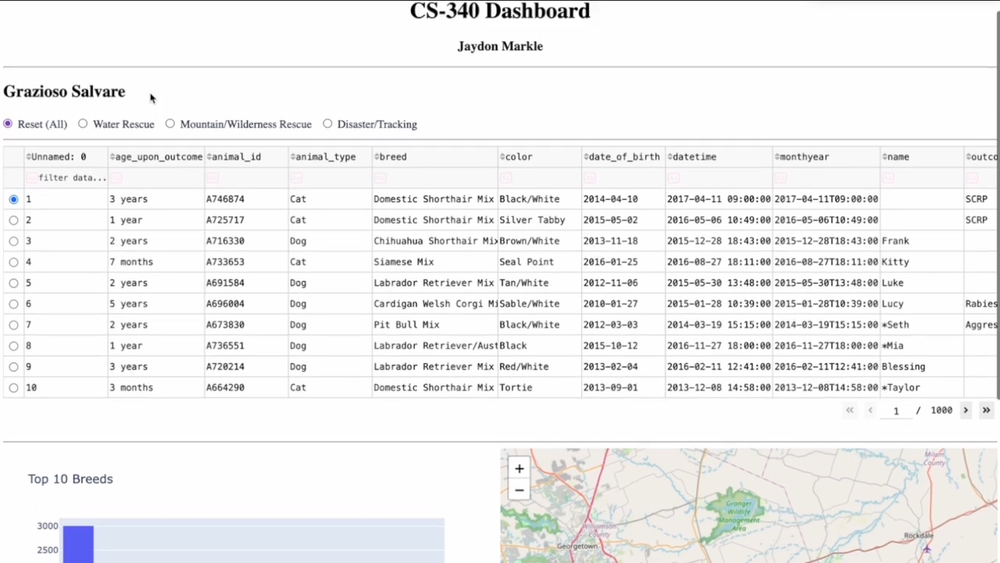
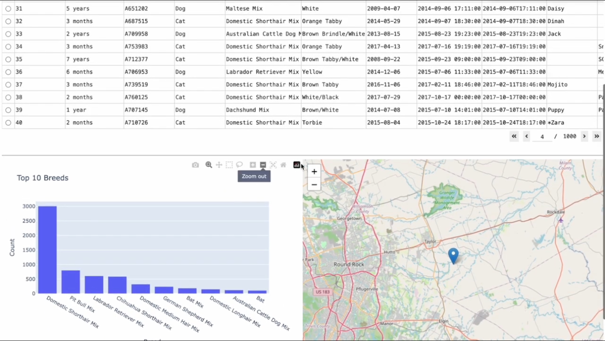
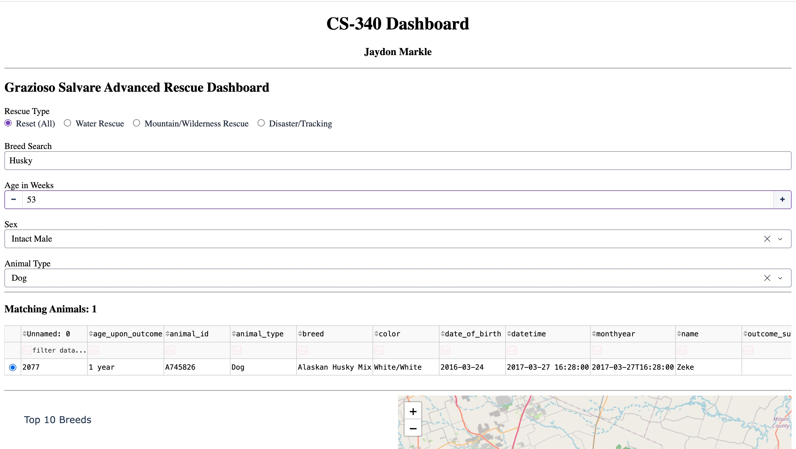

Enhancement Overview
This enhancement improved the CS 340 Animal Rescue Dashboard by adding expanded database filtering and improved data interaction. Additional filters allow users to search by rescue type, breed, age, sex, and animal type. A matching record count was also added so users can quickly see how many records meet their selected query. These changes improved usability by making it easier to search through large sets of animal rescue data.
Skills Demonstrated
- MongoDB Query Development
- Data Filtering Techniques
- Data Management
- Dashboard Development
- User Interface Improvement
Course Outcome Alignment
This enhancement demonstrates my ability to create and improve software that meets industry-related goals. By adding advanced filtering and a record count feature, the dashboard allows users to search records more efficiently and analyze the data in a more useful way.
Original Artifact Screenshots
These screenshots show the original version of the CS 340 Animal Rescue Dashboard before the database enhancement was added.


Enhanced Artifact Screenshot
This screenshot shows the enhanced dashboard with expanded filtering options and improved data interaction.

Narrative
The artifact I chose for this enhancement is my Project Two submission from CS 340. This artifact is a python code with a dashboard of data for an animal shelter. When doing the project, the application was for a client and contained a csv dataset of thousands of records. The dashboard contains a graph, map, and a chart that showcases the data. I selected this artifact for my enhancement because it aligns with my database skill and can be improved. For example, when analyzing this artifact, I noticed that searching specific queries was not supported, and the only filtering options were for rescue type. Showcasing my database skills, I added functions to the Python script to develop a deeper filtering search so that users can find specific animals more easily. By adding breed, age, sex, and animal type, I was able to showcase my ability to filter through data. The course outcome I planned to achieve for this enhancement plan is “Demonstrate an ability to use well-founded and innovative techniques, skills, and tools in computing practices for the purpose of implementing computer solutions that deliver value and accomplish industry-specific goals”. I believe that I was able to achieve this by using filtering techniques to deliver more value to the client for deeper searches. This enhancement was definitely more technical because I had to create more filters without affecting the map, chart, and table. One trouble that I had while implementing this enhancement was that my radio buttons did not work properly, but I was able to fix it. Overall, this enhancement showcases my database skills as well as delivers more value for the real-world use of this application.
Original Artifact
Original version of the CS 340 Animal Rescue Dashboard.
Download Original ArtifactEnhanced Artifact
Enhanced version containing advanced filtering, record counts, and improved dashboard functionality.
Download Enhanced ArtifactFull Narrative
Full narrative discussing enhancement decisions, implementation, challenges, and demonstrated database skills.
Download Full Narrative